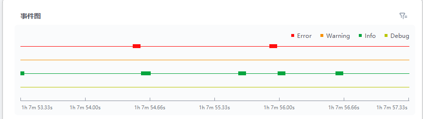
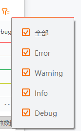

事件诊断
总览图处选择的事件可通过事件图进行解析，可清楚查看该事件“6秒钟”时间区域内的事件等级分类情况。
在总览图处选择相应事件后，事件图显示选中“6秒钟”时间区域内的事件等级的分类情况，即下图中的矩形为该时间下发生的触发事件。
在事件图处单击任意时间点，向上拖动鼠标滚轮，可对界面进行放大，向下拖动即还原；按住鼠标右键，左右拖动鼠标可查看前后时间段的诊断情况；将鼠标悬空在事件等级处（即图中的矩形）可查看该事件的相关日志信息。
说明
选中事件图的任意点时，IO波形图随之对应选中。

图 1 事件诊断事件等级按照严重程度由高到低主要分为：错误（Error）、警告（Warning）、信息（Info）、调试（Debug）。单击 可对显示的事件等级进行选择，可选全部或部分选择，如下图所示。
可对显示的事件等级进行选择，可选全部或部分选择，如下图所示。

图 2 安全等级设置事件诊断后，可针对事件图处的事件信息，在IO波形图处查看详细的IO波形图展示，具体请见IO波形监测章节。